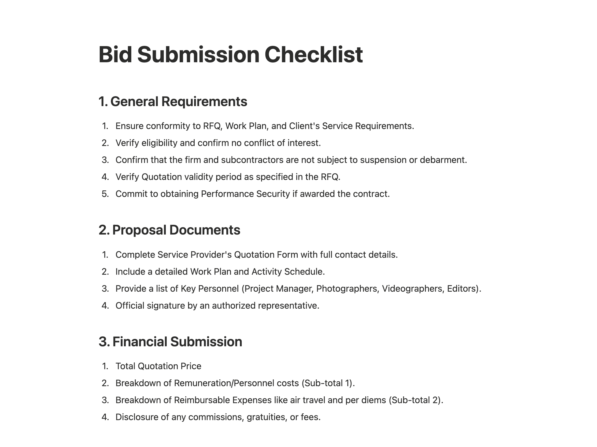

The Revenue Multiplier: RFP/RFQ Success
The Challenge: Securing high-value international and local contracts within tight procurement windows.
The Solution: Rigorous document coordination, stakeholder alignment, and compliance auditing for every bid.
The Result: Achieved an 85% success rate on international and local videography and photography contracts.
